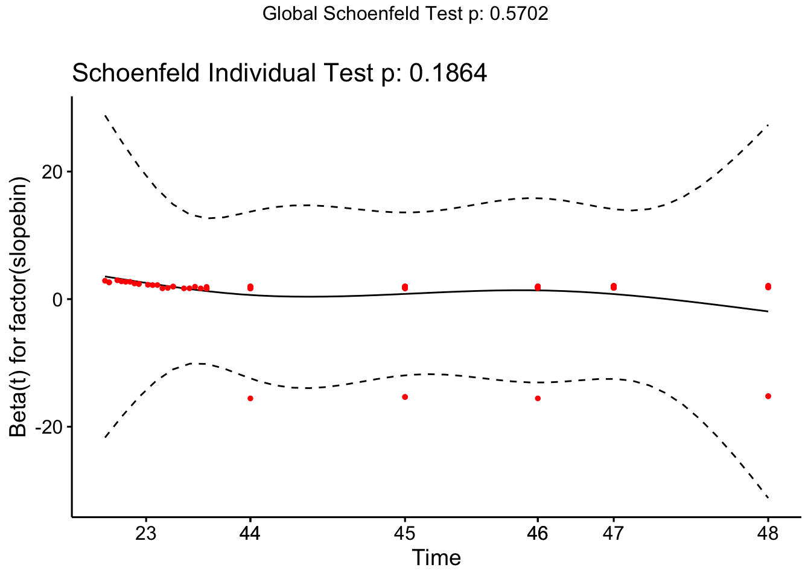
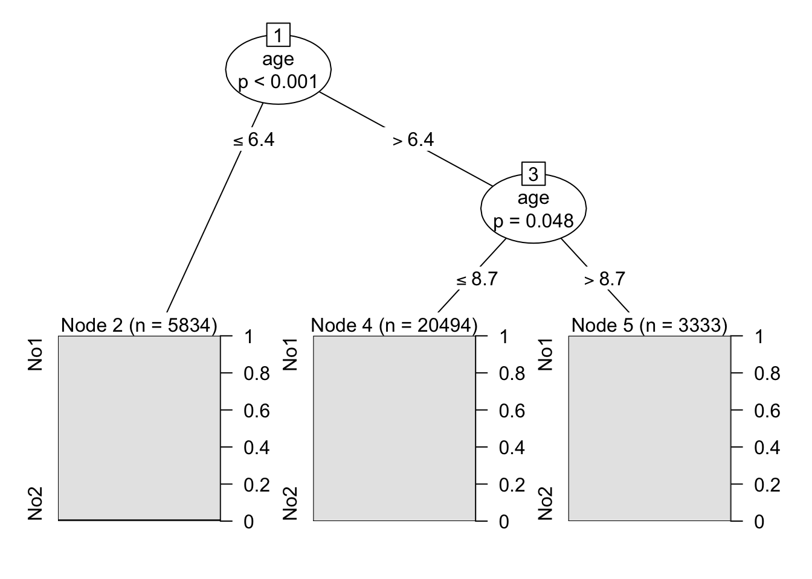
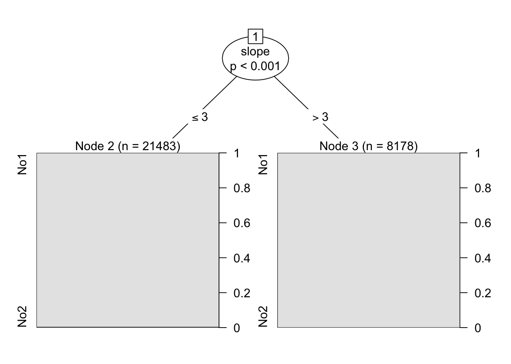

3 Cox Proportional Hazard Model
##Data Setup
## [1] TRUE
## attr(,"x-amz-id-2")
## [1] "2lCIj4+Ct38nl3CgXR5/3YViV9OgI10oP6S6MrYRBDeMsu0XzFSCMC8V2ytEwVlOJuDqKOlsicA="
## attr(,"x-amz-request-id")
## [1] "VR6ASH0XX8K13RYP"
## attr(,"date")
## [1] "Fri, 10 Jan 2025 19:35:28 GMT"
## attr(,"x-amz-bucket-region")
## [1] "us-east-1"
## attr(,"x-amz-access-point-alias")
## [1] "false"
## attr(,"content-type")
## [1] "application/xml"
## attr(,"transfer-encoding")
## [1] "chunked"
## attr(,"server")
## [1] "AmazonS3"files <- get_bucket_df(
bucket = "s3://survival2024/",
region = "us-east-1",
max = 20000
) %>%
as_tibble()
#Downloading files
save_object(
object = "hurricane.csv", #Change
bucket = "s3://survival2024/",
region = "us-east-1",
file = "hurricane" #Change
)## [1] "hurricane"#You can now start Wrangling the data...
hurricane <- read.csv("hurricane") #Change
# Rename hour so that the pivot does not take it in
hurricane <- hurricane %>% dplyr::rename("censor" = hour)
# Add id column
hurricane <- hurricane %>% mutate(id = 1:nrow(hurricane)) %>% dplyr::select(id,everything())
# Pivot the hour columns
hurrLong <- hurricane %>% pivot_longer(
cols = starts_with("h"),
names_to = "hour",
values_to = "pumpOn"
)
# Fixing hour column to be numeric instead of "h1"
hurrLong <- hurrLong %>%
mutate(hour = as.numeric(gsub("h","",hour)))
# Initializing DF
hurricaneLong <- data.frame()
### Fixes reason, adds consecHour
for(i in 1:nrow(hurricane)) {
# Go id by id
table = hurrLong %>% filter(id == i)
# Reduce rows to only include non-failed hours
failedAt = as.numeric(table[1,"censor"])
table = table[1:failedAt,]
# Set reason to 0 everywhere but the last hour
if (table[1,"reason"] != 0){
reason = as.numeric(table[1,"reason"])
table$reason = 0
table[nrow(table),"reason"] = reason
}
# Test to see if the last 12 rows of PumpOn are 1, then set consecHour to 1
table = table %>% mutate(consecHour = 0)
for (j in 1:nrow(table)){
# Skip first 12 rows
if (j < 13){
next
}
# Set it to 1 man
if (sum(table[(j-11):j,"pumpOn"],na.rm = T) == 12){
table[j,"consecHour"] <- 1
}
}
# Bind that data frame!!!!
hurricaneLong <- bind_rows(hurricaneLong,table)
}3.1 Initial Variable Screening
#hurricane <- hurricane[,-(9:56)]
#hurricane <- hurricane %>% dplyr::select(-survive,-reason2,-trashrack)
# Backward stepping
full.model <- coxph(Surv(censor, reason == 2) ~ backup + age + bridgecrane + servo + gear + slope + elevation, data = hurricane)
empty.model <- coxph(Surv(censor, reason == 2) ~ 1, data = hurricane)
back.model <- step(full.model,
scope = list(lower = empty.model,
upper = full.model),
direction = 'backward', k = qchisq(0.03, 1, lower.tail=FALSE),trace = F)
#
summary(back.model) ## 3 vars. Age, servo slope## Call:
## coxph(formula = Surv(censor, reason == 2) ~ age + servo + slope,
## data = hurricane)
##
## n= 770, number of events= 112
##
## coef exp(coef) se(coef) z Pr(>|z|)
## age -1.51920 0.21889 0.17075 -8.897 < 2e-16 ***
## servo 0.44075 1.55387 0.20412 2.159 0.0308 *
## slope -0.29120 0.74736 0.06677 -4.361 1.29e-05 ***
## ---
## Signif. codes: 0 '***' 0.001 '**' 0.01 '*' 0.05 '.' 0.1 ' ' 1
##
## exp(coef) exp(-coef) lower .95 upper .95
## age 0.2189 4.5686 0.1566 0.3059
## servo 1.5539 0.6436 1.0415 2.3182
## slope 0.7474 1.3380 0.6557 0.8519
##
## Concordance= 0.786 (se = 0.024 )
## Likelihood ratio test= 132.9 on 3 df, p=<2e-16
## Wald test = 97.26 on 3 df, p=<2e-16
## Score (logrank) test = 94.6 on 3 df, p=<2e-163.3 Time Dependency Assumption
## Binning
hurricane <- hurricane %>%
mutate(agebin = case_when(age<7~0, age<9~1, age>=9~2)) %>%
mutate(slopebin = case_when(slope<=3~0, slope<=5~1, slope>=10~2))
coxModel <- coxph(Surv(censor,reason == 2) ~ servo + factor(slopebin) + factor(agebin), data = hurricane)## Warning in coxph.fit(X, Y, istrat, offset, init, control, weights = weights, : Loglik converged
## before variable 3,5 ; coefficient may be infinite.## chisq df p
## servo 0.279 1 0.60
## factor(slopebin) 3.360 2 0.19
## factor(agebin) 0.429 2 0.81
## GLOBAL 3.857 5 0.57 Slope is definitely time dependent. Need to do tt(slope) in the hurricaneLong Model.
3.4 Model Building and Evaluation
## New names:
## Rows: 29661 Columns: 17
## ── Column specification
## ──────────────────────────────────────────────────────────────────────── Delimiter: "," dbl
## (17): ...1, id, backup, age, bridgecrane, servo, gear, trashrack, slope, elevation, surv...
## ℹ Use `spec()` to retrieve the full column specification for this data. ℹ Specify the column
## types or set `show_col_types = FALSE` to quiet this message.
## • `` -> `...1`## # A tibble: 29,661 × 17
## ...1 id backup age bridgecrane servo gear trashrack slope elevation survive censor
## <dbl> <dbl> <dbl> <dbl> <dbl> <dbl> <dbl> <dbl> <dbl> <dbl> <dbl> <dbl>
## 1 1 1 0 6 0 0 0 1 3 2 1 48
## 2 2 1 0 6 0 0 0 1 3 2 1 48
## 3 3 1 0 6 0 0 0 1 3 2 1 48
## 4 4 1 0 6 0 0 0 1 3 2 1 48
## 5 5 1 0 6 0 0 0 1 3 2 1 48
## 6 6 1 0 6 0 0 0 1 3 2 1 48
## 7 7 1 0 6 0 0 0 1 3 2 1 48
## 8 8 1 0 6 0 0 0 1 3 2 1 48
## 9 9 1 0 6 0 0 0 1 3 2 1 48
## 10 10 1 0 6 0 0 0 1 3 2 1 48
## # ℹ 29,651 more rows
## # ℹ 5 more variables: reason <dbl>, reason2 <dbl>, hour <dbl>, pumpOn <dbl>, consecHour <dbl>hurr_long <- hurr_long %>%
mutate(agebin = case_when(age<6.4~0, age<8.7~1, age>=8.7~2)) %>%
mutate(slopebin = case_when(slope<3~0, slope>=3~1))
hurr_long <- hurr_long %>% dplyr::rename(stop = hour)## # A tibble: 29,661 × 20
## ...1 id backup age bridgecrane servo gear trashrack slope elevation survive censor
## <dbl> <dbl> <dbl> <dbl> <dbl> <dbl> <dbl> <dbl> <dbl> <dbl> <dbl> <dbl>
## 1 1 1 0 6 0 0 0 1 3 2 1 48
## 2 2 1 0 6 0 0 0 1 3 2 1 48
## 3 3 1 0 6 0 0 0 1 3 2 1 48
## 4 4 1 0 6 0 0 0 1 3 2 1 48
## 5 5 1 0 6 0 0 0 1 3 2 1 48
## 6 6 1 0 6 0 0 0 1 3 2 1 48
## 7 7 1 0 6 0 0 0 1 3 2 1 48
## 8 8 1 0 6 0 0 0 1 3 2 1 48
## 9 9 1 0 6 0 0 0 1 3 2 1 48
## 10 10 1 0 6 0 0 0 1 3 2 1 48
## # ℹ 29,651 more rows
## # ℹ 8 more variables: reason <dbl>, reason2 <dbl>, stop <dbl>, pumpOn <dbl>, consecHour <dbl>,
## # agebin <dbl>, slopebin <dbl>, start <dbl>mod2 = coxph(formula = Surv(start, stop, reason == 2) ~ factor(agebin) + factor(servo) + factor(slopebin) + factor(consecHour), data = hurr_long)
summary(mod2)## Call:
## coxph(formula = Surv(start, stop, reason == 2) ~ factor(agebin) +
## factor(servo) + factor(slopebin) + factor(consecHour), data = hurr_long)
##
## n= 29661, number of events= 112
##
## coef exp(coef) se(coef) z Pr(>|z|)
## factor(agebin)1 -2.25868 0.10449 0.20035 -11.274 < 2e-16 ***
## factor(agebin)2 -3.82652 0.02179 0.72557 -5.274 1.34e-07 ***
## factor(servo)1 0.30565 1.35751 0.20792 1.470 0.141558
## factor(slopebin)1 -0.90564 0.40428 0.24239 -3.736 0.000187 ***
## factor(consecHour)1 0.11996 1.12745 0.20596 0.582 0.560278
## ---
## Signif. codes: 0 '***' 0.001 '**' 0.01 '*' 0.05 '.' 0.1 ' ' 1
##
## exp(coef) exp(-coef) lower .95 upper .95
## factor(agebin)1 0.10449 9.5705 0.070556 0.15474
## factor(agebin)2 0.02179 45.9024 0.005255 0.09032
## factor(servo)1 1.35751 0.7366 0.903145 2.04045
## factor(slopebin)1 0.40428 2.4735 0.251401 0.65014
## factor(consecHour)1 1.12745 0.8870 0.752982 1.68814
##
## Concordance= 0.793 (se = 0.024 )
## Likelihood ratio test= 146.5 on 5 df, p=<2e-16
## Wald test = 151.6 on 5 df, p=<2e-16
## Score (logrank) test = 221.1 on 5 df, p=<2e-16## [1] 1224.119## factor(agebin)1 factor(agebin)2 factor(servo)1 factor(slopebin)1
## -89.55120 -97.82146 35.75070 -59.57157
## factor(consecHour)1
## 12.74469## factor(agebin)1 factor(agebin)2 factor(servo)1 factor(slopebin)1
## 9.5704783 45.9023676 0.7366445 2.4735067
## factor(consecHour)1
## 0.8869597## Analysis of Deviance Table (Type II tests)
## LR Chisq Df Pr(>Chisq)
## factor(agebin) 131.472 2 < 2.2e-16 ***
## factor(servo) 2.191 1 0.1389
## factor(slopebin) 16.305 1 5.392e-05 ***
## factor(consecHour) 0.337 1 0.5613
## ---
## Signif. codes: 0 '***' 0.001 '**' 0.01 '*' 0.05 '.' 0.1 ' ' 1library(party)
library(partykit)
hurr_long$y<-ifelse(hurr_long$reason==2,1,0)
hurr_long$y<-ordered(hurr_long$y,levels=c(0,1),labels="No","Yes")
model1<-ctree(y~age,data=hurr_long)
model1##
## Model formula:
## y ~ age
##
## Fitted party:
## [1] root
## | [2] age <= 6.4: No1 (n = 5834, err = 1.1%)
## | [3] age > 6.4
## | | [4] age <= 8.7: No1 (n = 20494, err = 0.2%)
## | | [5] age > 8.7: No1 (n = 3333, err = 0.0%)
##
## Number of inner nodes: 2
## Number of terminal nodes: 3
hurr_long$y<-ifelse(hurr_long$reason==2,1,0)
hurr_long$y<-ordered(hurr_long$y,levels=c(0,1),labels="No","Yes")
model1<-ctree(y~slope,data=hurr_long)
model1##
## Model formula:
## y ~ slope
##
## Fitted party:
## [1] root
## | [2] slope <= 3: No1 (n = 21483, err = 0.5%)
## | [3] slope > 3: No1 (n = 8178, err = 0.1%)
##
## Number of inner nodes: 1
## Number of terminal nodes: 2